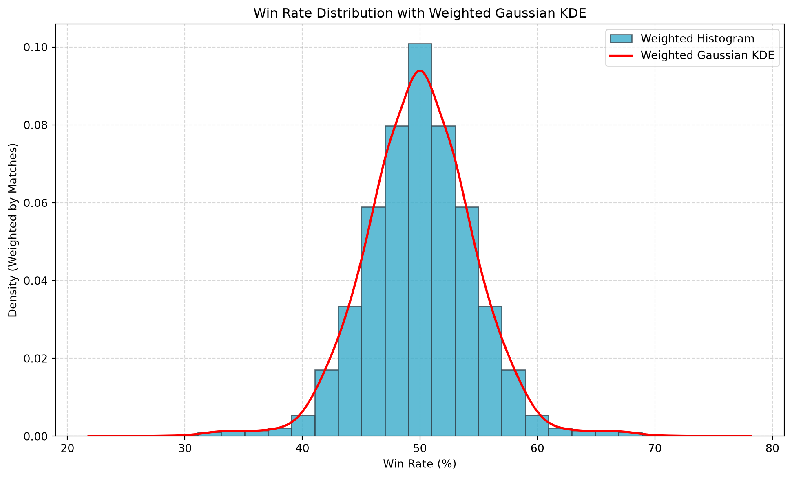

# Load Libaries
import numpy as np
import pandas as pd
import cvxpy as cp
import nashpy as nash
import pulp
import math as math
from scipy.optimize import linprog
from itertools import combinations
from scipy.stats import gaussian_kde
import matplotlib.pyplot as pltOptimal_Rivalry Python Demo
Marvel Rivals Team Optimization
This arcticle is a demonstration of an undergraduate project I’ve done for the popular video game Marvel Rivals. Before I go into the details of the project, I want to give a brief overview of the game itself in case you are not already familiar with it. Marvel Rivals is a 6v6 team-based fighting game where players can choose from a roster of over 50+ Marvel characters to form a team and battle against other players.
Given the uniqueness of each character, the selection of roaster becomes an important factor in determining the outcome of a match (asides from obvious factors like player skill). The goal of this demo is to demonstrate This project is to model how a clssical optinmization in Von Neumann’s game theory can be applied to modern video games.
Data Collection
This project will mostly be using two dataset from the GitHub repository Optimal_Rivalry which was made by… well me, the author of this article and a few classmates in her undergraduate years. We will primarily be using two datasets from the repository (both were scrapped from a third-party website RivalsMeta):
- MarvelRivals_NumMatches_Matrix.csv: This is a matrixized dataset that contains the number of matches played between each pair of characters in the game. The rows and columns of the matrix represent the characters, and the values in the matrix represent the number of matches played between each pair of characters. This dataset will be used to calculate the win rates between each pair of characters.
- MarvelRivals_WinRate_Matrix.csv: This is a matrixized dataset that contains the win rates of each pair of characters in the game. The rows and columns of the matrix represent the characters, and the values in the matrix represent the win rate of each pair of characters. This dataset will be used to analyze the performance of different character combinations.
From there we will construct a Payoff Matrix using a Gaussian Kernel Density Estimation technique to estimate the win rates between each pair of characters. The Payoff Matrix will be the basis of a classical optimization problem in Von Neumann’s game theory.
# Load Data
NumMatches_df = pd.read_csv("https://raw.githubusercontent.com/MisShenanigans/Optimal_Rivalry/main/MarvelRivals_NumMatches_Matrix.csv", index_col=0)
WinRate_df = pd.read_csv("https://raw.githubusercontent.com/MisShenanigans/Optimal_Rivalry/main/MarvelRivals_WinRate_Matrix.csv", index_col=0)
# Check for dimensions of the dataframes
print("NumMatches_df shape:", NumMatches_df.shape)
print("WinRate_df shape:", WinRate_df.shape)NumMatches_df shape: (56, 56)
WinRate_df shape: (56, 56)# Construct the KDE for the win rates
win_rates = WinRate_df.to_numpy(dtype=float).ravel()
num_matches = NumMatches_df.to_numpy(dtype=float).ravel()
min_value, max_value = win_rates.min(), win_rates.max()
kde = gaussian_kde(win_rates, weights=num_matches)
total_cdf = kde.integrate_box_1d(min_value, max_value)
print(f"Win-rate range: {min_value:.2f}% to {max_value:.2f}%; KDE mass: {total_cdf:.6f}")
utilities = {
rate: round(2 * kde.integrate_box_1d(min_value, rate) / total_cdf - 1, 2)
for rate in np.unique(win_rates)
}
payoff_values = np.array([utilities[rate] for rate in win_rates]).reshape(WinRate_df.shape)
Payoff_df = pd.DataFrame(payoff_values, index=WinRate_df.index, columns=WinRate_df.columns)Win-rate range: 25.12% to 74.88%; KDE mass: 0.999893The Payoff Matrix is a normalized to be normally distributed with a mean of 0 and a standard deviation of 1. The normalization is done to ensure that the optimization problem is well-defined and to avoid numerical instability. The Payoff Matrix will be used to find the optimal strategy for each player in the game. The KDE should look like a bell curve with the peak at the mean of 0 and the tails extending in both directions:
# Display the normalized KDE:
bandwidth = np.sqrt(kde.covariance[0, 0])
x_grid = np.linspace(win_rates.min() - 3 * bandwidth, win_rates.max() + 3 * bandwidth, 600,)
fig, ax = plt.subplots(figsize=(10, 6), layout="constrained")
ax.hist(win_rates, bins=25, weights=num_matches, density=True, color="#39accb", edgecolor="#34454f", alpha=0.8, label="Weighted Histogram")
ax.plot(x_grid, kde(x_grid), color="red", linewidth=2, label="Weighted Gaussian KDE",)
ax.set(title="Win Rate Distribution with Weighted Gaussian KDE", xlabel="Win Rate (%)", ylabel="Density (Weighted by Matches)", ylim=(0, None))
ax.grid(True, linestyle="--", alpha=0.5)
ax.set_axisbelow(True)
ax.legend()
plt.show()
Introduction to the Problem
Given a known opponent team, how can we choose six heroes to maximize our team’s matchup score? We model this as a binary optimization problem inspired by game theory.
Problem Setup
- Let \(x \in \{0,1\}^{56}\) represent our team, the row player’s selection. Each entry equals 1 if the corresponding hero is selected and 0 otherwise.
- Let \(y \in \{0,1\}^{56}\) represent the opponent’s team, the column player’s selection. For this problem, \(y\) is fixed and known.
- Each team contains exactly six heroes.
- Let \(A \in \mathbb{R}^{56 \times 56}\) be the payoff matrix, where \(A_{ij}\) measures the matchup score of our hero \(i\) against the opponent’s hero \(j\).
Our team’s total matchup score is \(x^\top A y\), which adds the scores across all pairs of selected heroes.
Optimization Objective
We choose \(x\) to solve:
\[ \begin{aligned} \max_{x \in \{0,1\}^{56}} \quad & x^\top A y \\ \text{subject to} \quad & \sum_{i=1}^{56} x_i = 6. \end{aligned} \]
The opponent’s fixed team also satisfies:
\[ y \in \{0,1\}^{56}, \qquad \sum_{i=1}^{56} y_i = 6. \]
Next, we define helper functions to convert between hero names and binary team vectors, along with example teams for both players.
payoff_df = Payoff_df.copy()
payoff_matrix = payoff_df.values
hero_list = payoff_df.columns.tolist()
n = len(hero_list) # Number of characters
# Convert a list of character names (length 6) into a binary bector
def team_to_vector(selected_heroes):
vector = np.zeros(len(hero_list), dtype=int)
for i, hero in enumerate(hero_list):
if hero in selected_heroes:
vector[i] = 1
return vector
# Convert a binary bector into a list of character names (length 6)
def vector_to_team(binary_vector):
selected_heroes = [hero_list[i] for i in range(len(hero_list)) if binary_vector[i] == 1]
return selected_heroes
# Example Teams
Avengers = ["Black Widow", "Iron Man", "Thor", "Hulk", "Hawkeye", "Captain America"]
FantasticFour = ["Invisible Woman", "The Thing", "Human Torch", "Mister Fantastic", "Spider Man", "Wolverine"]
Guardians = ["Mantis", "Rocket Raccoon", "Adam Warlock", "Star Lord", "Groot", "Venom"]
Xmen = ["Magneto", "Psylocke", "Wolverine", "Magik", "Storm", "Emma Frost"]
RandomTeam = ["Magneto", "Doctor Strange", "The Punisher", "Scarlet Witch", "Cloak & Dagger", "Loki"]
TankHealder = ["Thor", "Angela", "Loki", "Rogue", "Gambit", "Magneto"]For example, if an opponent team consists the Avengers, and our team consists of the X-Men, the outcome of the utility function \(x^\top A y\) will be the total matchup score of our team against the opponent’s team. The goal is to find the optimal selection of heroes for our team that maximizes this score.
rowPlayer = team_to_vector(Xmen)
columnPlayer = team_to_vector(Avengers)
result = rowPlayer.T @ payoff_matrix @ columnPlayer
resultnp.float64(3.0200000000000005)3.02 is a positive score, which means that the X-Men team is expected to have an advantage over the Avengers team in a matchup. The higher the score, the better our team’s performance against the opponent’s team.
Optimal Team Selection:
It turns out, when the enemy team is known, it is fairly easy to find the optimal team slelection using cvxpy.
# In order to use, first use team_to_vector() to convert the list of characters into a binary vector
def base_optimal_counter(opponent_team):
x = cp.Variable(n, boolean=True)
y = opponent_team
constraint_0 = [cp.sum(x) == 6]
constraint_1 = [cp.sum(y) == 6]
obj = cp.Maximize(x.T @ payoff_matrix @ y)
prob = cp.Problem(obj,constraint_0+constraint_1)
prob.solve()
return x.value
def base_optimal_counter_info(opponent_team):
x = cp.Variable(n, boolean=True)
y = opponent_team
constraint_0 = [cp.sum(x) == 6]
constraint_1 = [cp.sum(y) == 6]
obj = cp.Maximize(x.T @ payoff_matrix @ y)
prob = cp.Problem(obj,constraint_0+constraint_1)
prob.solve()
optimal_team = vector_to_team(x.value.round())
expected_value = x.value.T @ payoff_matrix @ y
print("Optimal Team:")
for hero in optimal_team:
print(f"-{hero}")
print(f"Expected Utility Score of (x^T * A * y) is: {expected_value:.2f}")
return x.valueWhen the opponent team is the Avengers, the optimal team selection is:
OpponentTeam = Avengers
y = team_to_vector(OpponentTeam)
print("Best Conter to the Avengers is:")
OpponentTeamConter = base_optimal_counter_info(y)Best Conter to the Avengers is:
Optimal Team:
-Devil Dinosaur
-Peni Parker
-Magik
-Storm
-Mantis
-Ultron
Expected Utility Score of (x^T * A * y) is: 23.86Optimal Solution to Von Neumann Min Max Equation
In zero-sum games (which category this game falls into), the Von Neumann Minimax Theorem guarantees the existence of an optimal strategy that a player can adopt to maximize their worst-case outcome, regardless of what the opponent chooses.
The Minimax Formulation
Let A be the payoff matrix, where each entry A[i, j] represents how well hero i performs against hero j. Then the minimax objective is:
\[ \max_{\mathbf{x}} \ \min_{\mathbf{y}} \ \mathbf{x}^T A \mathbf{y} \]
xis our strategy (a 6-hero team, encoded as a binary vector of length 37)yis the opponent’s strategy (also a 6-hero team)- The game is zero-sum, meaning if we gain, the opponent loses equally.
This equation models the idea:
> What is the best team we can pick assuming the opponent will counter us in the worst way possible?
Why Minimax?
Unlike the base counter strategy (which assumes the opponent team is known), this problem assumes we don’t know the opponent’s team, and instead optimize for the safest possible team, one that performs reliably across the board. This is especially useful for a team of new players who has no idea about the game.
Implementation
And it turns out, the solution to the Min Max Question can be found relatively using greedy descent optimization.
def min_max_solution_greedy(payoff_matrix):
current_team = np.zeros(n, dtype=int)
current_team[:6] = 1
improvement = True
while improvement:
opponent = base_optimal_counter(current_team)
opponent = np.round(opponent)
current_score = current_team.T @ payoff_matrix @ opponent
improvement = False
best_swap_score = current_score
best_team = current_team.copy()
current_indices = np.where(current_team == 1)[0]
remaining_indices = np.where(current_team == 0)[0]
for out_hero in current_indices:
for in_hero in remaining_indices:
temp_team = current_team.copy()
temp_team[out_hero] = 0
temp_team[in_hero] = 1
temp_score = temp_team.T @ payoff_matrix @ base_optimal_counter(temp_team)
if temp_score > best_swap_score:
best_swap_score = temp_score
best_team = temp_team.copy()
improvement = True
current_team = best_team
best_value = current_team.T @ payoff_matrix @ base_optimal_counter(current_team)
print(f"Row-player guaranteed payoff is greater than: {best_value:.2f}")
BestTeam = vector_to_team(current_team)
print("Von Neumann MinMax Best team according to greedy descent strategy is:", ', '.join(BestTeam))
return current_teamOptimalVector = min_max_solution_greedy(payoff_matrix)Row-player guaranteed payoff is greater than: -0.04
Von Neumann MinMax Best team according to greedy descent strategy is: Devil Dinosaur, Peni Parker, Daredevil, Magik, Mantis, UltronConclusion
With the solution to the min max problem found, we conclude this demonstration of how classical optimization in Von Neumann’s game theory can be applied to modern video games. Note that the solution might change as the game is to have future updates and new characters are added to the game. The solution is also dependent on the accuracy of the payoff matrix, which is based on historical data and may not reflect future matchups.